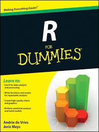

R Workshop Series
Québec Centre for Biodiversity Science
Workshop 1: Introduction to R
What is R?
R is an open source programming language designed for statistical analysis, data mining, and data visualization.

Why use R?
It’s open source
- Improved by the public, for the public!
- Free

Why use R?

It’s compatible
R works on most existing operating systems
Why use R?

- More and more scientists use it every year!
- Increasing capacities
Challenge
- Throughout these workshops you will be presented with a series of challenges that will be indicated by these rubiks cubes
- During challenges, collaborate with your neighbours!

Challenge 1
The Rstudio console

Challenge 2
Use R to calculate the following skill testing question:
\[ 2+16*24-56 \]
Hints: The * symbol is used to multiply
Challenge 2: Solution
- Question
\[ 2+16*24-56 \]
- Solution
2+16*24-56## [1] 330Challenge 3
Use R to calculate the following skill testing question:
\[ 2+16*24-56 / (2+1)-457 \]
Hints: Think about the order of the operation.
Challenge 3: Solution
- Question
\[ 2+16*24-56 / (2+1)-457 \]
- Solution
2+16*24-56/(2+1)-457## [1] -89.66667Note that R follows the order of the operations
R command line tip
Use the “Up” and “Down” arrow keys to reproduce previous commands.
Give it a try!

Challenge 4

What is the area of this circle, with a radius of \(5\ cm\)?
Challenge 4: Solution
- Question
What is the area of a circle, with a radius of \(5\ cm\)?
- Solution
3.1416*5^2## [1] 78.54Tip: Note that R has some built-in constant such as \(\pi\), so you can write:
pi*5^2## [1] 78.53982Challenge 5
Create an object with a value of 1+1.718282 (Euler’s number) and name it euler.value.
Challenge 5: Solution
- Question
Create an object with a value of 1+1.718282 (Euler’s number) and name it euler.value.
- Solution
euler.value <- 1+1.718282
euler.value## [1] 2.718282Challenge 6
Create a second object (you decide the name) with a name that starts with a number. What happens?
Challenge 6: Solution
- Question
Create a second object (you decide the name) with a name that starts with a number. What happens?
- Solution
Creating an object name that starts with a number returns the following error:
Error: unexpected symbol in "[your object name]"Challenge 7
Create a vector containing the first 5 odd numbers, starting from 1, and name it odd.n
Challenge 7: Solution
- Question
Create a vector containing the first 5 odd numbers, starting from 1, and name it odd.n
- Solution
odd.n <- c(1,3,5,7)Challenge 8
Using the vector num.vector
- Extract the 4th value
- Extract the 1st and 3rd values
- Extract all values except for the 2nd and the 4th
Challenge 8: Solution
- Extract the forth value
num.vector[4]## [1] 98- Extract the 1st and 3rd values
num.vector[c(1,3)]## [1] 1 3- Extract all values except for the 2nd and the 4th
num.vector[c(-2,-4)]## [1] 1 3 32 -76 -4Challenge 9
Explore the difference between these 2 lines of code:
char.vector == "blue"
char.vector[char.vector == "blue"]Challenge 9: Solution
char.vector == "blue"## [1] TRUE FALSE FALSEIn this line of code, you test a logical statement. For each entry in the char.vector, R checks whether the entry is equal to "blue" or not.
char.vector[char.vector == "blue"]## [1] "blue"In this line of code, you ask R to extract all values within the col.vector vector that are exactly equal to "blue".
Indexing data frames: examples
my.first.df[1,]Extracts the first line
Note that an empty index select all the values.
my.first.df[,3]Extracts the third column
my.first.df[2,4]Extracts the second element of the fourth column
Indexing data frames: examples
my.first.df[c(2,4),]Extracts lines 2 to 4
The examples given so far are also valid for indexing matrices, this is not the case for the following examples.
my.first.df$siteIDExtracts the variable siteID from the data frame
my.first.df$siteID[2]Extracts the second value of the variable siteID from the data frame
my.first.df$[c("siteID", "soil_pH")]Extracts the siteID and soil_pH variables from the data frame.
Challenge 10
- Extract the
num.spcolumn frommy.first.dfand multiply its value by the first four values ofnum.vec.
- Extract the
- After that, write a statement that checks if the values you obtained are greater than 25.
Challenge 10: Solution
Part a):
my.first.df$num.sp * num.vector[c(1:4)]## [1] 17 92 45 686
# or my.first.df[,3] * num.vector[c(1:4)]## [1] 17 92 45 686
Part b):
(my.first.df$num.sp * num.vector[c(1:4)]) > 25## [1] FALSE TRUE TRUE TRUE
Challenge 11
- Create a vector
athat contains all the numbers from 1 to 5 - Create an object
bwith a value of 2 - Add
aandbtogether using the basic+operator and save the result in an object calledresult_add - Add
aandbtogether using thesumfunction and save the result in an object calledresult_sum - Compare
result_addandresult_sum. Are they different? - Add 5 to
result_sumfunction using thesumfunction
Challenge 11: Solution
a <- c(1:5)
b <- 2
result_add <- a + b
result_sum <- sum(a,b) result_add## [1] 3 4 5 6 7 result_sum## [1] 17 sum(result_sum, 5)## [1] 22Challenge 11: Solution
The operation + on the vector a adds 2 to each element. The result is a vector.
The function sum concatenates all the values provided and then sum them. It is the same as doing 1+2+3+4+5+2.
Challenge 12
plot is a function that draws a graph of y as a fucntion of x. It requires two arguments names x and y. What are the differences between the following lines?
a <- 1:100
b <- a^2
plot(a,b)
plot(b,a)
plot(x = a, y = b)
plot(y = b, x = a)Challenge 12: Solutions

Challenge 12: Solution
plot(a,b)
Challenge 12: Solution
plot(b,a)
The shape of the plot has changed, as we did not provided the arguments names, the order is important.
Challenge 12: Solution
plot(x = a, y = b)
Same as plot(a,b)
Challenge 12: Solution
plot(y = b, x = a)
Same as plot(a,b). The argument names are provided, the order is not important.
Package name: an example
library(ggplot2)
qplot(1:10, 1:10)
Search results

Search results

Help pages

Description
function_name {package_name}- Description: a short description of what the function does.

Usage
- How to call the function
- If
name = valueis present, a default value is provided if the argument is missing. The argument becomes optional. - Other related functions described in this help page

Arguments
- Description of all the arguments and what they are used for

Details
- A detailed description of how the functions work and their characteristics

Value
- A description of the return value

See Also
- Other related functions that can be useful

Examples
- Reproducibles examples

Challenge 13
Create a sequence of even numbers from 0 to 10 using the
seqfunction.- Create a unsorted vector of your favourite numbers, then:
- find out how to sort it
- sort your vector in reverse order
Challenge 13: Solutions
Part a):
seq(from=0, to=10, by=2)## [1] 0 2 4 6 8 10
or
seq(0,10,2)## [1] 0 2 4 6 8 10
Part b).
numbers <- c(2,4,22,6,26) sort(numbers, decreasing = T)## [1] 26 22 6 4 2
Challenge 14
Find the appropriate functions to perform the following operations:
- Square root
- Calculate the mean of numbers
- Combine two data frames by columns
- List availables objects in your workspace
Challenge 14: Solutions
sqrtmeancbindls
Cheat 4ever
Some useful R books
 


Thank you for attending!

We want your feed back! https://docs.google.com/spreadsheets/d/1BUZ24UZEMvsF16gxWOm8yAvM_A9DdIeSaOk6b61bzxQ/edit#gid=0